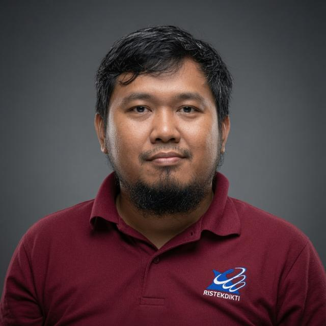

About
Marcelinus Alfasisurya Setya Adhiwibawa, M.Stat.
Applied Scientist · AI, Geospatial & Intelligent Systems
Marcelinus Alfasisurya Setya Adhiwibawa is an applied scientist in Malang, Indonesia. He holds an M.Stat. from Brawijaya University and a bachelor’s degree in plant pest and disease from the same university. Since 2021 he has worked as an Agricultural Data System Scientist at Mondelēz International. From 2012 to 2021 he was a research scientist at the Ma Chung Research Center for Photosynthetic Pigments.
Profile
His work connects agricultural experiments with the data systems behind them: study design, data cleaning, spatial analysis, spectra, images, and the instruments that collect them. He applies machine learning to concrete agricultural problems, using CNN, ANN, and ANFIS models on leaf images, satellite pixels, and spectra.
He has published more than 25 peer-reviewed papers and conference proceedings, cited 239 times on Google Scholar (h-index 7). He is a co-inventor of US Patent 12,444,511 on predicting cocoa-leaf nutrients from spectrometry data.
Career
Agricultural Data System Scientist
Mondelēz International
- Agricultural data science and analytics for cocoa research.
- Co-inventor of US Patent 12,444,511 on predicting cocoa-leaf nutrients from spectrometry data.
Research Scientist
Ma Chung Research Center for Photosynthetic Pigments
- Research in bioimaging, chemometrics, natural pigments, and agricultural image analysis.
- Built mobile applications that estimate plant nutrient status from leaf images, including the soybean application Mata Daun.
- Applied CNN, ANFIS, and ANN models to species identification and pigment prediction.
- Designed and fabricated low-cost multispectral sensors, photometers, and chlorophyll meters.
Plant Monitoring and Advisory
PT Tintin Boyok Sawit Makmur (Barito Pacific Group)
- Field agronomic research and data-based monitoring for oil-palm plantations.
Plantation Protection Staff
PT Astra Agro Lestari Tbk
- Pest and disease data analysis for oil palm.
- Supported an e-learning system for plantation protection officers and the setup of the plant-protection laboratory at Kumai Research Center.
Education
Master of Statistics (M.Stat.)
Brawijaya University, Malang. GPA 3.60 / 4.00
Bachelor of Agriculture (S.P.), Plant Pest and Disease
Brawijaya University, Malang. GPA 3.35 / 4.00
Harvard Summer School, Biodiversity of Borneo
CTFS Scholarship
Awards and grants
- CTFS Harvard University Scholarship for the 2007 Harvard Summer School programme Biodiversity of Borneo.
- Asian Agri research grant for a biodiversity assessment, approximately USD 11,000.
- Insentif Sistem Inovasi Nasional (Insinas) grant, Ministry of Research and Technology, 2015, as team leader (USD 12,500).
Languages: Indonesian (native) and English (professional working proficiency).